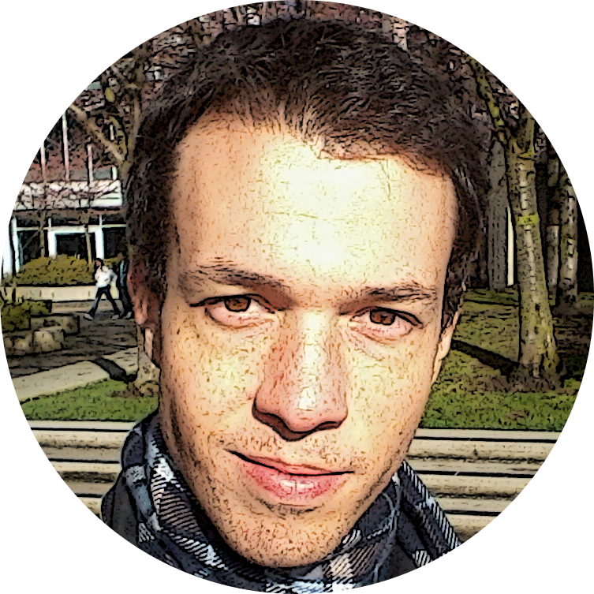

I am a developer, especialized in back-end and passionate for front-end new techs.
Versed in Node.js, Ruby, MongoDB, SQL, jQuery, CSS, HTML5, SEO, UX
This website shows some of my most recent Portfolio.
Consult my curriculum for formal education and past jobs.
GameWiser
JavaScript, Node.js, jQuery, MongoDB
Independent, user based, game review website.
Our focus is to create a better system to search and review games from several platforms.

Extensive project aiming tracking player progress in training games.
Involved projecting and implementing a Node.js progress tracker, also generating reports and providing administrative interface.
Blickz!
ActionScript3, Flixel

Developed (within a group) under 48 hours for the game marathon Global Game Jam!
We used AS3 as programming language and Flixel as framework.
Won regional awards for: innovative gameplay, fun. Second place for: audio, control, multiplayer, sum
An anbixious project which the goal was to create a F2P game that put the player in the life of a ascending soccer player as a MMO.
Leadered? by me along 1 other developer/artist and a soccer specialist as game developer. Currently there is a working prototype.
FindGamesDB
Ruby, MongoDB, jQuery

Inspired by Jinni, this was an attempt to create a new, efficent game search engine!
This project led--? me to GameWiser.
Working prototype!
For feedback or work opportunities please send me an e-mail via:
I am currently available for hire in Vancouver - BC
Working with social web, game industry, startups, transportation or robotics have a very strong appeal for me.
Fabiano Pereira Soriani : PHONE GOES HERE